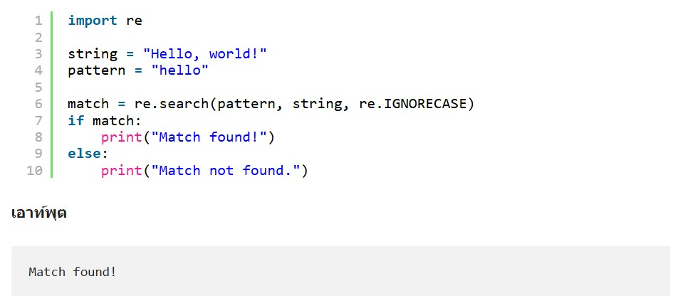

เริ่มเข้าสู่เนื้อหา Python Srtings
สตริงใน Python นั้นดูเรียบง่ายในตอนแรก แต่คุณสามารถใช้สตริงได้หลายวิธี วันนี้เราจะมาดูประเภทข้อมูลสตริง สตริงคือลำดับของอักขระ ทุกอย่างที่อยู่ในเครื่องหมายคำพูดถือเป็นสตริงใน Python และคุณสามารถใช้เครื่องหมายคำพูดเดี่ยวหรือคู่ล้อมรอบสตริงของคุณได้ดังนี้:
สตริงใน Python จะล้อมรอบด้วยเครื่องหมายคำพูดเดี่ยวหรือเครื่องหมายคำพูดคู่ 'hello' เหมือนกับ "hello" คุณสามารถแสดงสตริงลิเทอรัลด้วยฟังก์ชัน print() ได้
การเปลี่ยนตัวพิมพ์ใหญ่-เล็กของคำในสตริงนั้นค่อนข้างง่าย ดูโค้ดด้านล่างแล้วลองกำหนดผลลัพธ์:
ผลลัพธ์ของโค้ดด้านบนจะออกมาเป็นดังนี้:
สตริงตัวพิมพ์เล็ก “inye allison” ถูกเก็บไว้ในชื่อตัวแปรในตัวอย่างนี้ เมธอด title() ถูกนำไปใช้กับตัวแปรในคำสั่ง print() เมธอดคือฟังก์ชันที่เป็นของอ็อบเจ็กต์ ในกรณีนี้ เมธอด title นั้นเป็นของคลาสสตริง จุด (.) หลัง name ใน name.title() จะสั่งให้ Python ใช้เมธอด title() กับชื่อตัวแปร ซึ่งมีคลาสประเภท String ชุดวงเล็บจะตามหลังเมธอดทุกเมธอด เนื่องจากเมธอดมักต้องการข้อมูลเพิ่มเติมเพื่อทำงาน ข้อมูลนี้เรียกว่าพารามิเตอร์ ฟังก์ชัน title() ไม่ต้องการพารามิเตอร์ใดๆ ดังนั้นวงเล็บจึงว่างเปล่า “title()” แสดงแต่ละคำโดยใช้ตัวพิมพ์ใหญ่:
ผลลัพธ์ของโค้ดด้านบนจะออกมาเป็นดังนี้:
วิธี lower() มีประโยชน์สำหรับการจัดเก็บข้อมูล เนื่องจากคุณมักไม่สามารถไว้วางใจการใช้ตัวพิมพ์ใหญ่ในอินพุตของผู้ใช้ได้ ดังนั้นจึงแนะนำให้แปลงสตริงเป็นตัวพิมพ์เล็กก่อนจัดเก็บ เมื่อเรียกค้นสตริง สามารถแปลงกลับเป็นตัวพิมพ์เล็กที่เหมาะสมกว่าได้
การเชื่อมต่อสตริงของ Python
การรวมสตริงเข้าด้วยกันมักจะเป็นประโยชน์ ตัวอย่างเช่น คุณอาจต้องการเก็บชื่อและนามสกุลไว้ในตัวแปรหรือตำแหน่งที่แยกจากกัน จากนั้นจึงรวมเข้าด้วยกันทุกครั้งที่คุณต้องการแสดงชื่อนามสกุลของบุคคลอื่น
ผลลัพธ์ของโค้ดด้านบนจะออกมาเป็นดังนี้:
การจัดการ Strings ขั้นสูง
ความสามารถในการจัดการสตริงของ Python นั้นมีมากกว่าแค่พื้นฐาน คุณสามารถใช้นิพจน์ทั่วไป สตริงรูปแบบ และอื่นๆ เพื่อจัดการงานที่ซับซ้อน เช่น การแยกวิเคราะห์ การตรวจสอบความถูกต้อง และการแปลงข้อมูล
นิพจน์ทั่วไป
โมดูล reของ Python ช่วยให้สามารถจับคู่รูปแบบสตริงได้อย่างมีประสิทธิภาพโดยใช้นิพจน์ทั่วไป ซึ่งมีประโยชน์อย่างยิ่งสำหรับงานต่างๆ เช่น การตรวจสอบอีเมล การแยกข้อความ และการจัดการสตริงที่ซับซ้อน
String Slicing
แยกส่วนที่ต้องการของสตริงโดยใช้รูปแบบการแบ่งส่วนเช่นstring[start:end:step
f-Strings
f-strings ซึ่งเปิดตัวใน Python 3.6 ช่วยให้คุณสามารถฝังนิพจน์ไว้ในสตริงลิเทอรัล ทำให้การจัดรูปแบบสตริงกระชับและอ่านง่าย
เนื้อหารายละเอียด
เว็บไซต์ตัวอย่างสตริงเพิ่มเติม